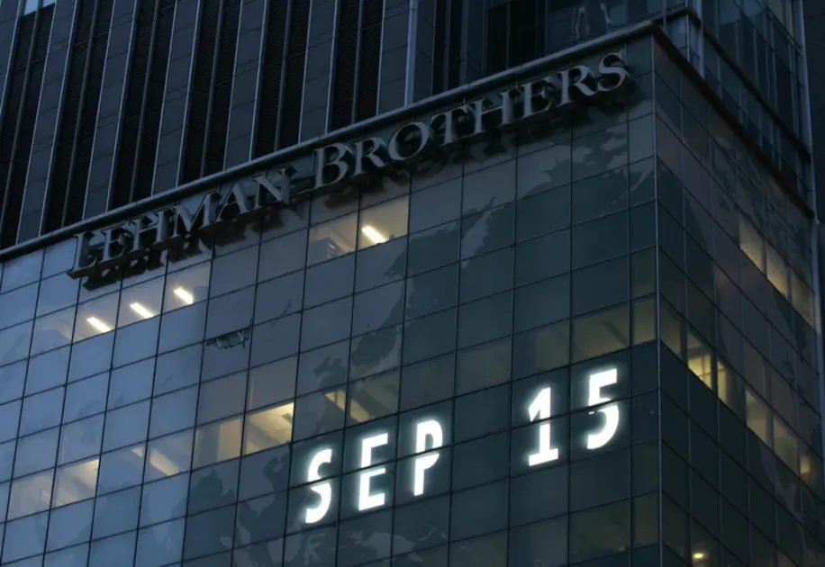
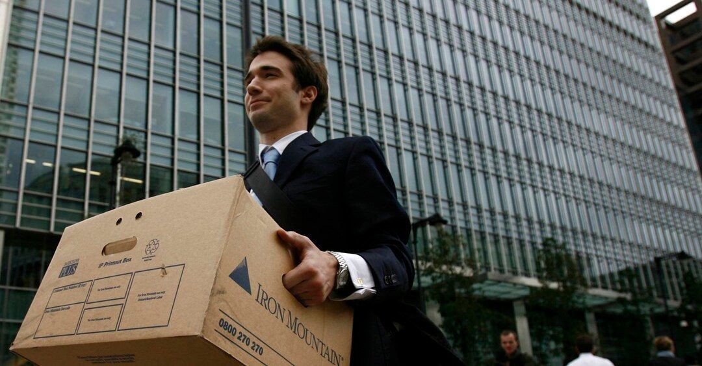
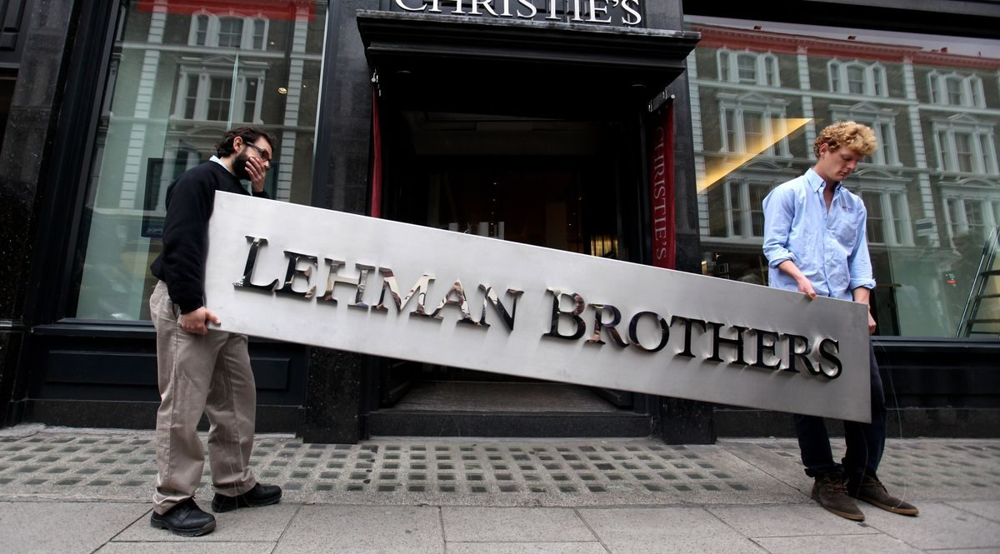

Improvvisa ed imprevista.
Tra le strade affollate di New York si respira la solita aria settembrina. L’incasinato fervore, che accompagna la vita quotidiana di milioni di cittadini, si immobilizza nell'istante in cui accade l'impensabile.
Il crack della Lehman Brothers. Una delle banche più ricche degli Stati Uniti dichiara bancarotta. Manager ed impiegati, con i loro scatoloni riempiti di oggetti personali, abbandonano i propri uffici. Il fallimento testimoniato dai 600 miliardi di dollari di debito dichiarato.

Frode e avarizia portano al collasso l’economia mondiale. La bolla immobiliare, scoppiata all'improvviso, è la rappresentazione visiva della truffa bancaria architettata sulle spalle del cittadino medio.

Dopo il crollo, 5 trilioni di dollari in pensioni, beni immobiliari, risparmi e titoli erano svaniti.
8 milioni di persone persero il lavoro, 6 milioni persero la casa.
Questo solo negli Stati Uniti.